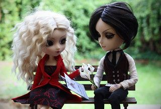
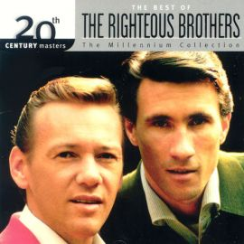

Every night in my dreams I see you, I feel you That is how I know you go on.
(After love after love...)
Где-то мечтой просыпаюсь,С неба на камни срываюсь,Руки твои отпуская,Падаю, но поднимаюсь.Нежно целуя дыханье,Я промолчу до свиданья.
Four, tres, two, uno!
Listen up ya'll, cause this is it The beat that I'm bangin' is the next shit
Oh baby, baby.... Oh baby, baby...

Felicità è tenersi per mano andare lontano la felicità E' il tuo sguardo innocente in mezzo alla gente la felicità
Da bambino io sognaidivi eroi e marinainella mente avevo giàla mia idea di libertà.La bambina che era in meora è donna insieme a te
You and me We used to be together Every day together, always
Load up on guns and bring your friends It's fun to lose and to pretend She's over-bored and self-assured Oh no, I know a dirty word
I'm tired of being what you want me to be Feeling so faithless lost under the surface Don't know what you're expecting of me
No time for standing out there,this night is something to care,we tried to find out some where to goIt's all we needit's all we need
Oppa Gangnam StyleGangnam Style
و تلقفني في المدينة هذي الشوارع و الأرصفة .. مع الناسيجرفني مدها البشريأموج مع الموج فيهاعلى السطح أبقى .. بغير تماس
Do you rememberBefore the rain came downYou were so full of lifeSo bring that right back round
It's my life, take it or leave it, set me freeWhat's that crap papa, know it all?I got my own life, you got your own life
What is love?Baby don't hurt meDon't hurt meNo more
Baby don't hurt me, don't hurt meNo moreWhat is love?Yeah
Can't touch thisCan't touch thisCan't touch this (oh-oh oh oh oh-oh-oh)Can't touch this (oh-oh oh oh oh-oh-oh)

Oh, my love my darling I've hungered for your touch a long lonely time and time goes by so slowly and time can do so much
If I should stay I would only be in your way. So I'll go but I know I'll think of you Every step of the way.
Dime si es verdadMe dijeron que te estas casandoTú no sabes lo que estoy sufriendoEsto te lo tengo que decir